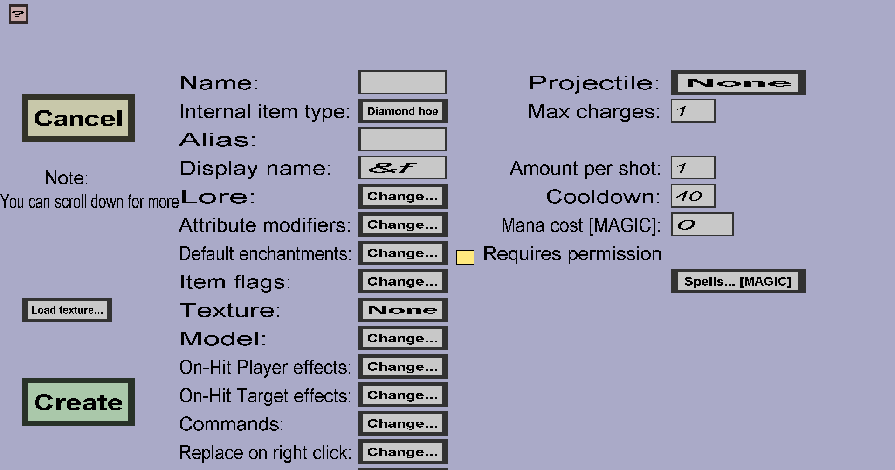

The wand edit menu can be used to modify or create (custom) wands. Please note that you need to create a custom projectile before you can create a wand (unless you installed the Magic plug-in). If you just started creating a new wand, it should look like this:
This menu has everything the base item edit menu has, but a little more. Wands are much like simple custom items, but they can't stack and they can fire custom projectiles. Before you can create a wand, you need to create at least 1 custom projectile at the 'Projectiles' section of the Editor (just like there is a 'Textures', 'Items', 'Recipes' and 'Drops' section).
This determines which custom projectile players can shoot with this wand. The button on the right of 'Projectile:' displays the name of the currently selected custom projectile, or 'None' if you haven't chosen one yet. To change the custom projectile, you should click on that button, which will take you to the projectile selection menu where you can choose which custom projectile this wand will shoot.
If you leave the Max charges 1, it will not have any effect. If you give it a larger value than 1, players will need at least 1 charge in order to be able to fire the projectile and firing a projectile will consume 1 charge. Also, a 'Recharge time' field should become visible. The 'Recharge time' is the time in ticks it takes to generate a new charge. Players will automatically start regenerating charges if they have less charges than 'Max charges' until they reach the 'Max charges'.
The amount of projectiles players will launch each time they fire. The amount does not have any effect on the cooldown or charges: If you change the 'Amount per shot' to 2, players will always fire 2 instances of the Projectile at each shot, but that will only consume 1 charge and will put the wand on the exact same Cooldown as if you kept the 'Amount per shot' 1.
The time in ticks players must wait between firing projectiles. Whenever a player fires a projectile with the wand, the player won't be able to fire again until the Cooldown has passed. If the Max charges are greater than 1, there are two restrictions for the player:
As long as any of those is not satiesfied, the player won't be able to fire.
This wand requires mana from the Magic plug-in. If you don't install this plug-in and the mana cost is higher than 0, the wand is unusable. If you additionally install the Action Bar API plug-in, the current mana of the player will be shown in their action bar.
Whether players need a permission to shoot projectiles with this wand. If this is unchecked, any player can shoot projectiles with this wand. If this is checked, only players with the customitems.shoot.WAND_NAME or the customitems.shootall permission can shoot projectiles with this wand.
Lets the wand cast spells from the Magic plug-in. You need to insert the name of the spell(s) that you want the wand to cast. This does nothing when the Magic plug-in is not installed. You can use /kci magic to see the list of spells.